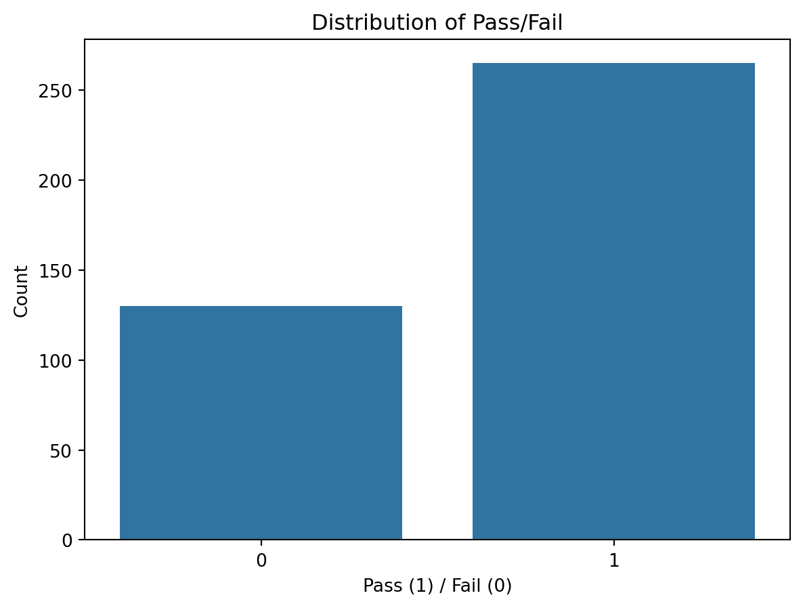
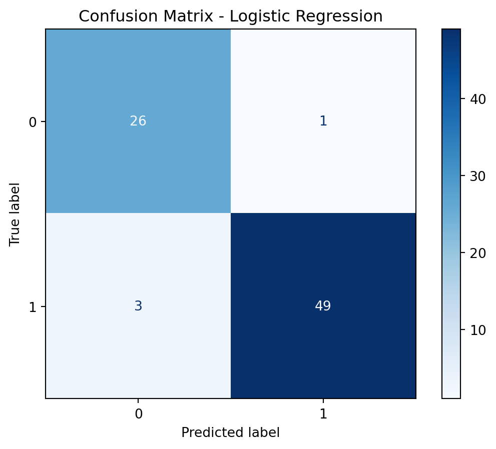
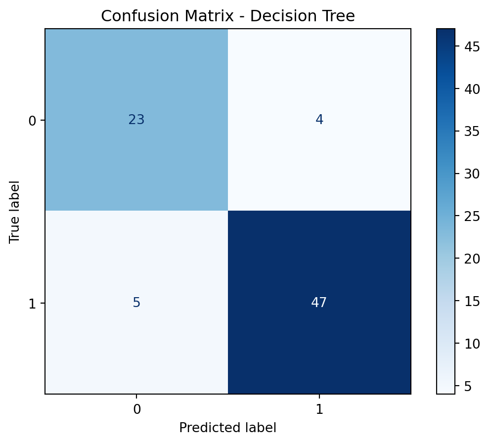
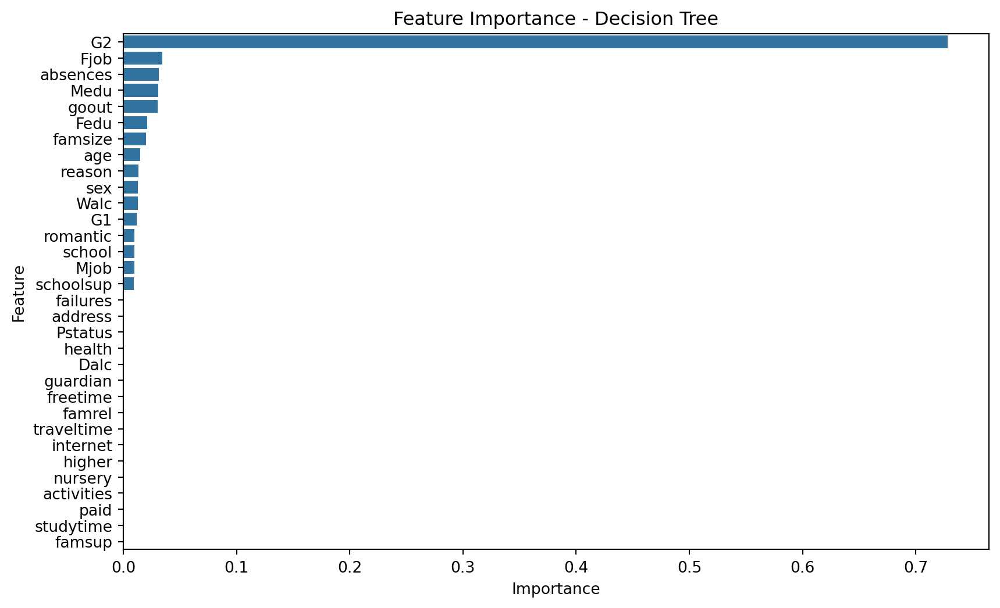
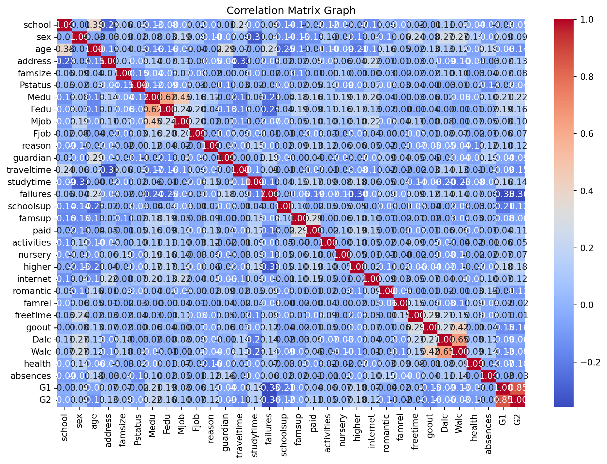

# Import necessary libraries
import numpy as np
import matplotlib.pyplot as plt
import pandas as pd
import seaborn as sns
from sklearn.model_selection import train_test_split
from sklearn.preprocessing import StandardScaler, LabelEncoder
from sklearn.linear_model import LogisticRegression
from sklearn.metrics import ConfusionMatrixDisplay
from sklearn.metrics import accuracy_score, f1_score, confusion_matrix
from sklearn.tree import DecisionTreeClassifierStep 1
Predicting Student Exam Performance
This project aims to predict student exam performance using machine learning techniques. The dataset used is the Student Performance Data Set from the UCI Machine Learning Repository, which contains various features related to student demographics and study behavior.
Problem Statement:
- You are provided with a dataset containing student demographic information and study behavior. Your task is to build and evaluate a machine learning model that predicts whether a student will pass or fail based on their features.
Tasks and Marking Scheme
Task Description Marks
- Data Preprocessing: load, clean, and explore the dataset (handle missing values, encode categoricals, etc.) 3 marks
- Feature selection/engineering and data splitting 2 marks
- Model training using at least two ML algorithms (e.g., logistic regression, decision trees, etc.) 4 marks
- Evaluate the models using appropriate metrics (e.g., accuracy, F1-score, confusion matrix) and choose the better model 3 marks
- GitHub Submission: Clear project structure, documented code, and informative README
Project Structure
Data Preprocessing: Load, Clean, and Explore the Dataset
Load the dataset
# Student Performance Data Set from UCI Machine Learning Repository
url = "https://raw.githubusercontent.com/KunjalJethwani/StudentPerformance/refs/heads/main/student-mat.csv"
data = pd.read_csv(url, sep=';')
# Display the first few rows of the dataset
data.head()| school | sex | age | address | famsize | Pstatus | Medu | Fedu | Mjob | Fjob | ... | famrel | freetime | goout | Dalc | Walc | health | absences | G1 | G2 | G3 | |
|---|---|---|---|---|---|---|---|---|---|---|---|---|---|---|---|---|---|---|---|---|---|
| 0 | GP | F | 18 | U | GT3 | A | 4 | 4 | at_home | teacher | ... | 4 | 3 | 4 | 1 | 1 | 3 | 6 | 5 | 6 | 6 |
| 1 | GP | F | 17 | U | GT3 | T | 1 | 1 | at_home | other | ... | 5 | 3 | 3 | 1 | 1 | 3 | 4 | 5 | 5 | 6 |
| 2 | GP | F | 15 | U | LE3 | T | 1 | 1 | at_home | other | ... | 4 | 3 | 2 | 2 | 3 | 3 | 10 | 7 | 8 | 10 |
| 3 | GP | F | 15 | U | GT3 | T | 4 | 2 | health | services | ... | 3 | 2 | 2 | 1 | 1 | 5 | 2 | 15 | 14 | 15 |
| 4 | GP | F | 16 | U | GT3 | T | 3 | 3 | other | other | ... | 4 | 3 | 2 | 1 | 2 | 5 | 4 | 6 | 10 | 10 |
5 rows × 33 columns
# Check for missing values
data.isnull().sum()school 0
sex 0
age 0
address 0
famsize 0
Pstatus 0
Medu 0
Fedu 0
Mjob 0
Fjob 0
reason 0
guardian 0
traveltime 0
studytime 0
failures 0
schoolsup 0
famsup 0
paid 0
activities 0
nursery 0
higher 0
internet 0
romantic 0
famrel 0
freetime 0
goout 0
Dalc 0
Walc 0
health 0
absences 0
G1 0
G2 0
G3 0
dtype: int64# Check the data types of each column
data.dtypesschool object
sex object
age int64
address object
famsize object
Pstatus object
Medu int64
Fedu int64
Mjob object
Fjob object
reason object
guardian object
traveltime int64
studytime int64
failures int64
schoolsup object
famsup object
paid object
activities object
nursery object
higher object
internet object
romantic object
famrel int64
freetime int64
goout int64
Dalc int64
Walc int64
health int64
absences int64
G1 int64
G2 int64
G3 int64
dtype: object# Display basic statistics of the dataset
data.describe()| age | Medu | Fedu | traveltime | studytime | failures | famrel | freetime | goout | Dalc | Walc | health | absences | G1 | G2 | G3 | |
|---|---|---|---|---|---|---|---|---|---|---|---|---|---|---|---|---|
| count | 395.000000 | 395.000000 | 395.000000 | 395.000000 | 395.000000 | 395.000000 | 395.000000 | 395.000000 | 395.000000 | 395.000000 | 395.000000 | 395.000000 | 395.000000 | 395.000000 | 395.000000 | 395.000000 |
| mean | 16.696203 | 2.749367 | 2.521519 | 1.448101 | 2.035443 | 0.334177 | 3.944304 | 3.235443 | 3.108861 | 1.481013 | 2.291139 | 3.554430 | 5.708861 | 10.908861 | 10.713924 | 10.415190 |
| std | 1.276043 | 1.094735 | 1.088201 | 0.697505 | 0.839240 | 0.743651 | 0.896659 | 0.998862 | 1.113278 | 0.890741 | 1.287897 | 1.390303 | 8.003096 | 3.319195 | 3.761505 | 4.581443 |
| min | 15.000000 | 0.000000 | 0.000000 | 1.000000 | 1.000000 | 0.000000 | 1.000000 | 1.000000 | 1.000000 | 1.000000 | 1.000000 | 1.000000 | 0.000000 | 3.000000 | 0.000000 | 0.000000 |
| 25% | 16.000000 | 2.000000 | 2.000000 | 1.000000 | 1.000000 | 0.000000 | 4.000000 | 3.000000 | 2.000000 | 1.000000 | 1.000000 | 3.000000 | 0.000000 | 8.000000 | 9.000000 | 8.000000 |
| 50% | 17.000000 | 3.000000 | 2.000000 | 1.000000 | 2.000000 | 0.000000 | 4.000000 | 3.000000 | 3.000000 | 1.000000 | 2.000000 | 4.000000 | 4.000000 | 11.000000 | 11.000000 | 11.000000 |
| 75% | 18.000000 | 4.000000 | 3.000000 | 2.000000 | 2.000000 | 0.000000 | 5.000000 | 4.000000 | 4.000000 | 2.000000 | 3.000000 | 5.000000 | 8.000000 | 13.000000 | 13.000000 | 14.000000 |
| max | 22.000000 | 4.000000 | 4.000000 | 4.000000 | 4.000000 | 3.000000 | 5.000000 | 5.000000 | 5.000000 | 5.000000 | 5.000000 | 5.000000 | 75.000000 | 19.000000 | 19.000000 | 20.000000 |
# Determine the target variable
# 'G3' is the final grade (0-20) of the student, which we will use to predict pass/fail status
target = 'G3'
# Convert the target variable to binary (pass/fail)
data[target] = np.where(data[target] >= 10, 1, 0)
# Display the first few rows after target conversion
data.head()| school | sex | age | address | famsize | Pstatus | Medu | Fedu | Mjob | Fjob | ... | famrel | freetime | goout | Dalc | Walc | health | absences | G1 | G2 | G3 | |
|---|---|---|---|---|---|---|---|---|---|---|---|---|---|---|---|---|---|---|---|---|---|
| 0 | GP | F | 18 | U | GT3 | A | 4 | 4 | at_home | teacher | ... | 4 | 3 | 4 | 1 | 1 | 3 | 6 | 5 | 6 | 0 |
| 1 | GP | F | 17 | U | GT3 | T | 1 | 1 | at_home | other | ... | 5 | 3 | 3 | 1 | 1 | 3 | 4 | 5 | 5 | 0 |
| 2 | GP | F | 15 | U | LE3 | T | 1 | 1 | at_home | other | ... | 4 | 3 | 2 | 2 | 3 | 3 | 10 | 7 | 8 | 1 |
| 3 | GP | F | 15 | U | GT3 | T | 4 | 2 | health | services | ... | 3 | 2 | 2 | 1 | 1 | 5 | 2 | 15 | 14 | 1 |
| 4 | GP | F | 16 | U | GT3 | T | 3 | 3 | other | other | ... | 4 | 3 | 2 | 1 | 2 | 5 | 4 | 6 | 10 | 1 |
5 rows × 33 columns
# Visualize the distribution of the target variable
target_variable = data[target]
sns.countplot(x=target_variable, data=data)
plt.title("Distribution of Pass/Fail")
plt.xlabel("Pass (1) / Fail (0)")
plt.ylabel("Count")
plt.show()
Step 2
Feature Selection/Engineering and Data Splitting
# Select features and target variable
features = data.drop(columns=[target])
target_variable = data[target]
# Encode categorical variables
categorical_cols = features.select_dtypes(include=['object']).columns
for col in categorical_cols:
le = LabelEncoder()
features[col] = le.fit_transform(features[col])# Split the dataset into training and testing sets
X_train, X_test, y_train, y_test = train_test_split(features, target_variable, test_size=0.2, random_state=42)# Display the shapes of the training and testing sets
print(f"Training set shape: {X_train.shape}")
print(f"\nTesting set shape: {X_test.shape}")Training set shape: (316, 32)
Testing set shape: (79, 32)Step 3
Model Training using Logistic Regression and Decision Trees
# Initialize the models
logistic_model = LogisticRegression(max_iter=1000)
decision_tree_model = DecisionTreeClassifier(random_state=42)# Train the Logistic Regression model
logistic_model.fit(X_train, y_train)LogisticRegression(max_iter=1000)In a Jupyter environment, please rerun this cell to show the HTML representation or trust the notebook.
On GitHub, the HTML representation is unable to render, please try loading this page with nbviewer.org.
LogisticRegression(max_iter=1000)
# Train the Decision Tree model
decision_tree_model.fit(X_train, y_train)DecisionTreeClassifier(random_state=42)In a Jupyter environment, please rerun this cell to show the HTML representation or trust the notebook.
On GitHub, the HTML representation is unable to render, please try loading this page with nbviewer.org.
DecisionTreeClassifier(random_state=42)
Step 4
Evaluate the Models
# Import necessary libraries for evaluation
from sklearn.metrics import accuracy_score, f1_score, confusion_matrix, classification_report
# Evaluate the Logistic Regression model
y_pred_logistic = logistic_model.predict(X_test)
logistic_accuracy = accuracy_score(y_test, y_pred_logistic)
logistic_f1 = f1_score(y_test, y_pred_logistic)
logistic_confusion = confusion_matrix(y_test, y_pred_logistic)
print("Logistic Regression Model Evaluation:")
print(f"Accuracy: {logistic_accuracy * 100:.2f}%")
print(f"F1 Score: {logistic_f1 * 100:.2f}%")
print("Confusion Matrix:")
print(logistic_confusion)Logistic Regression Model Evaluation:
Accuracy: 94.94%
F1 Score: 96.08%
Confusion Matrix:
[[26 1]
[ 3 49]]# Evaluate the Decision Tree model
y_pred_tree = decision_tree_model.predict(X_test)
tree_accuracy = accuracy_score(y_test, y_pred_tree)
tree_f1 = f1_score(y_test, y_pred_tree)
tree_confusion = confusion_matrix(y_test, y_pred_tree)
print("Decision Tree Model Evaluation:")
print(f"Accuracy: {tree_accuracy * 100:.2f}%")
print(f"F1 Score: {tree_f1 * 100:.2f}%")
print("Confusion Matrix:")
print(tree_confusion)Decision Tree Model Evaluation:
Accuracy: 88.61%
F1 Score: 91.26%
Confusion Matrix:
[[23 4]
[ 5 47]]# Plot confusion matrix for Logistic Regression
ConfusionMatrixDisplay.from_estimator(logistic_model, X_test, y_test, cmap=plt.cm.Blues)
plt.title("Confusion Matrix - Logistic Regression")
plt.show()
# Plot confusion matrix for Decision Tree
ConfusionMatrixDisplay.from_estimator(decision_tree_model, X_test, y_test, cmap=plt.cm.Blues)
plt.title("Confusion Matrix - Decision Tree")
plt.show()
# Visualize feature importance for Decision Tree
importances = decision_tree_model.feature_importances_
# Create a DataFrame for feature importance
feature_importance_df = pd.DataFrame({'Feature': features.columns, 'Importance': importances})
# Sort the DataFrame by importance
feature_importance_df = feature_importance_df.sort_values(by='Importance', ascending=False)
# Plot feature importance
plt.figure(figsize=(10, 6))
sns.barplot(x='Importance', y='Feature', data=feature_importance_df)
plt.title("Feature Importance - Decision Tree")
plt.xlabel("Importance")
plt.ylabel("Feature")
plt.show()
# Visualize the correlation matrix
correlation_matrix = features.corr()
plt.figure(figsize=(12, 8))
sns.heatmap(correlation_matrix, annot=True, fmt=".2f", cmap='coolwarm')
plt.title("Correlation Matrix Graph")
plt.show()
Step 5
GitHub Submission
Ensure the project structure is clear and well-documented
# Saving the trained models for future use
import joblib
# Save the Logistic Regression model
joblib.dump(logistic_model, 'logistic_regression_model.pkl')
# Save the Decision Tree model
joblib.dump(decision_tree_model, 'decision_tree_model.pkl')
# Ensure the models are saved correctly
print("Models saved successfully.")
# Load the models to verify they are saved correctly
loaded_logistic_model = joblib.load('logistic_regression_model.pkl')
loaded_decision_tree_model = joblib.load('decision_tree_model.pkl')
# Verify the loaded models
print("Logistic Regression Model Loaded:", loaded_logistic_model)
print("Decision Tree Model Loaded:", loaded_decision_tree_model)Models saved successfully.
Logistic Regression Model Loaded: LogisticRegression(max_iter=1000)
Decision Tree Model Loaded: DecisionTreeClassifier(random_state=42)Summary of Model Performance and Conclusion
- We have trained two models: Logistic Regression and Decision Tree.
- The Logistic Regression model achieved an accuracy of approximately 94.94% and an F1 score of 96.08%.
- The Decision Tree model achieved an accuracy of approximately 88.61% and an F1 score of 91.26%.
- Based on the evaluation metrics, the Logistic Regression model outperforms the Decision Tree model in terms of accuracy and F1 score.
- We therefore conclude that the Logistic Regression model is the better choice for predicting student exam performance in this dataset. This model can be used to identify students at risk of failing and provide targeted interventions to improve their chances of success.